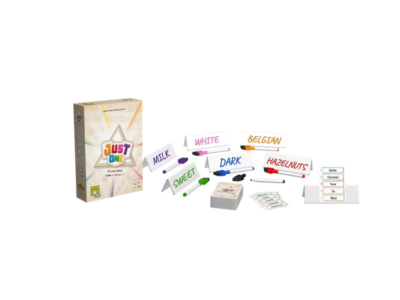

Green Team Wins
"It's a game of thinking just like everybody else! All players are asked the same question,
then write down their responses at the same time. Answer with the majority, join the GREEN TEAM
and get points. Don't: join the ORANGE TEAM and get nothing.. 1) Get on the GREEN TEAM. 2) Stay
on the GREEN TEAM. 3) WIN." -From the publisher
3-12 players | Ages 10+ | 15 mins

Just One
"Just One is a cooperative party game in which you play together to discover as many mystery words
as possible. Find the best clue to help your teammate. Be unique, as all identical clues will be
cancelled!" -BoardGameGeek
3-7 players | Ages 8+ | 20-30 mins
In the Palm of Your Hand
"In the Palm of Your Hand is a new team-based game from first-time designer Timothée Decroix! Help
your grandparent relive their memories using 11 different 3D objects and over 100
beautifully-illustrated cards! One player (grandchild) must “mime” memories depicted on cards by
using objects in the palm of another player (grandparent), whose eyes are shut. The grandchild draws
2 random cards from their hand, secretly looks at them, then uses any of the 11 3D objects included in
the box to mime the memories in the grandparent's palm. Cards are added (by the opposing team and
from the deck) until there are 8 cards total. The grandparent then opens their eyes and must find
the 2 correct memories out of the 8 cards on the table! The game ends once everyone has had a chance
to be the grandparent!" -BoardGameGeek
2-8 players | Ages 10+ | 20-30 mins
Exit: The Game (Series)
"In Exit: The Game, players must use their team spirit, creativity, and powers of deduction to
crack codes, solve puzzles, collect objects, and earn their freedom bit by bit." -BoardGameGeek
1-6 players | Ages 12+ | 45-150 mins
Imagine (AKA Pictell)
"More than one thousand items from all walks of life can be guessed through the use of 61
transparent cards in Imagine, whether they're placed next to one another or superimposed. Almost
everything in the world can be represented by a simplified concept — just don't speak while
you're playing..." -BoardGameGeek
3-8 players | Ages 12+ | 15-30 mins
Go (AKA Igo/Baduk/Weiqi)
"By all appearances, it's just two players taking turns laying stones on a 19×19 (or smaller) grid
of intersections. But once its basic rules are understood, Go shows its staggering depth. One can
see why many people say it's one of the most elegant brain-burning abstract games in history, with
players trying to claim territory by walling off sections of the board and surrounding each other's
stones. The game doesn't end until the board fills up, or, more often, when both players agree to
end it, at which time whoever controls the most territory wins." -BoardGameGeek